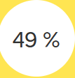
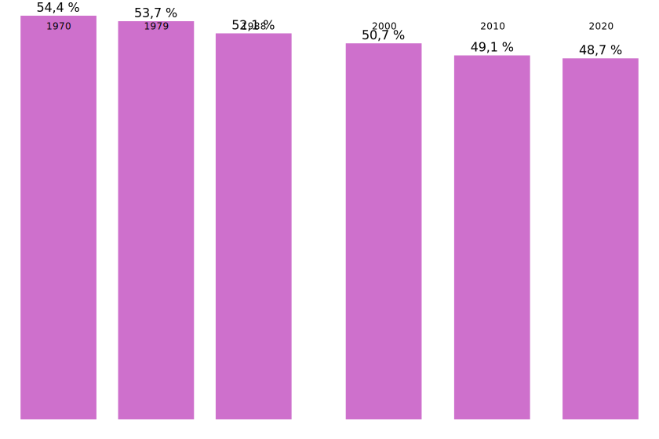
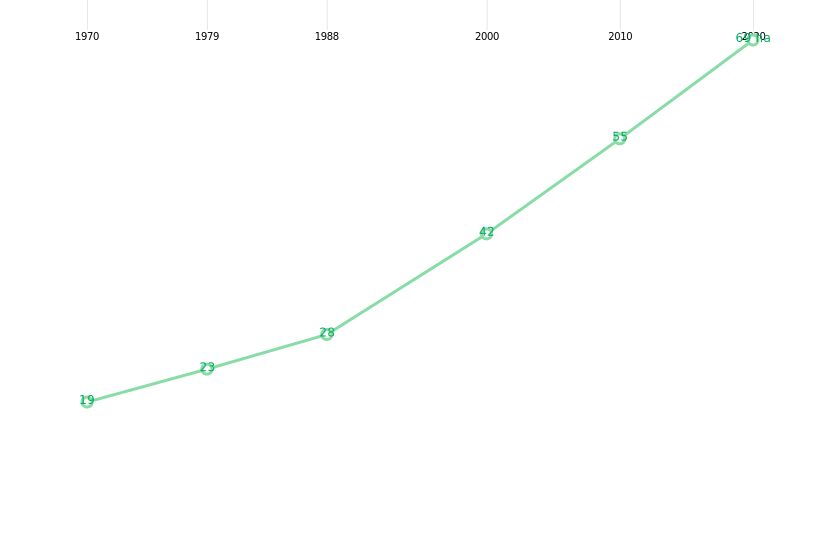
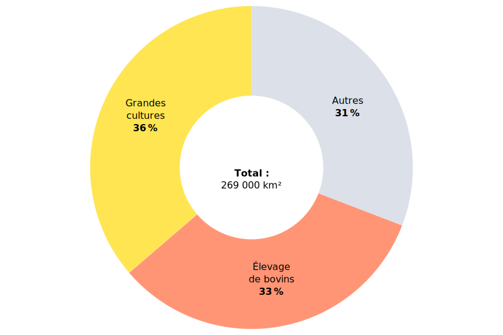
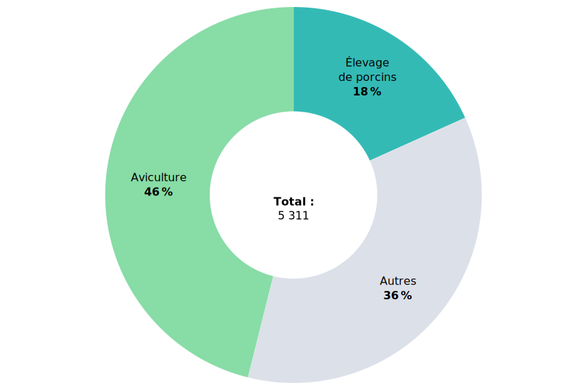
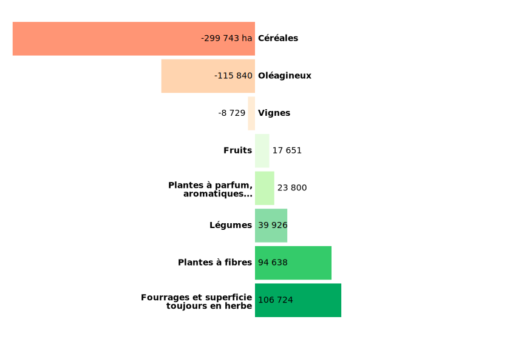

Retourner à l’accueil 
Partager la Viz (Mail) 
Partager la Viz (X)
Partager la Viz (Facebook)
Explorer les données territoriales 
Pendant la navigation, appuyer pour accéder aux autres actions 
La superficie agricole utilisée
En 2020, l’agriculture occupe 269 000 km² de l’espace français. En métropole
?
En Guyane, dont la superficie est le sixième de celle de la métropole, l’agriculture n’utilise que 0,4 % du territoire.
, cela représente 49 % du territoire.
Alors qu'elle diminue régulièrement depuis 50 ans, la superficie agricole utilisée
?
La SAU comprend les terres arables (y compris pâturages temporaires, jachères, cultures sous abri, jardins familiaux...), les surfaces toujours en herbe et les cultures permanentes (vignes, vergers...).
varie peu entre 2010 et 2020 (-1 %)
 C’est la surface occupée en 2020 par l’agriculture en France métropolitaine.
L’agriculture occupe près de la moitié de l’espace en métropole, part qui se stabilise

ℹ️ Télécharger les données
📥 Format CSV 📥 Format SVG 📥 Format PNG
Les exploitations agricoles sont moins nombreuses à utiliser cet espace : 100 000 en moins depuis 2010. Leur SAU moyenne continue d’augmenter.
En 2020, elle s’élève en métropole à 69 ha (contre 55 ha en 2010).
La SAU moyenne augmente toujours au même rythme

ℹ️ Télécharger les données
📥 Format CSV 📥 Format SVG 📥 Format PNG
Nombre d’exploitations par classe de SAU
Le nombre d’exploitation de moins de 100 ha recule tandis que celui des plus grandes augmente. Pour autant, les exploitations de moins de 50 ha sont toujours majoritaires (54 % en 2020).
Les exploitations de moins de 20 ha concentrent les 2/3 de la diminution totale.
Ces petites exploitations restent les plus présentes, mais en 50 ans leur part dans l’ensemble est passée de 58 % à 38 %.
À l’opposé, le nombre d’exploitations de plus de 200 ha augmente d’un tiers entre 2010 et 2020.
Sur plus long terme, les exploitations de 100 ha et plus sont de plus en plus nombreuses.
Plus de 100 000 en 2020, elles représentent un quart du total, contre 2 % en 50 ans auparavant.
Les exploitations spécialisées en grandes cultures occupent plus d’un tiers de la SAU en métropole, celles spécialisées dans les élevages bovins presqu’autant.
Grandes cultures et élevage de bovins occupent les deux tiers de la surface agricole totale

ℹ️ Télécharger les données
📥 Format CSV 📥 Format SVG 📥 Format PNG
La surface des exploitations varie avec leur spécialisation.
Surface moyenne des exploitations par spécialisation
Les exploitations bovines sont en moyenne les plus vastes, devant celles orientées en grandes cultures.
A l’opposé, viticulture, fruits, maraîchage ou horticulture se déploient plutôt dans de petites surfaces.
La SAU peut s'avérer nulle. C'est le cas pour plus de 5 000 exploitations,
?
Hors apiculture pour qui la notion de SAU est difficile à évaluer, les surfaces butinées étant soit des espaces publics ou des surfaces mises à disposition par des exploitants ou des particuliers.
où seuls les bâtiments servent à la production agricole.
Exploitation avec une SAU nulle

ℹ️ Télécharger les données
📥 Format CSV 📥 Format SVG 📥 Format PNG
Près de la moitié des exploitations (46 %) avec une SAU nulle sont celles de l’élevage de volailles ; elles représentent un quart des exploitations avicoles. L’élevage et l’engraissement de porcins viennent ensuite (18 %).
Évolution par type de culture en métropole
Entre 2010 et 2020, l’exploitation de la SAU a évolué de façon contrastée selon les cultures : celle des céréales et des oléagineux recule tandis que celle des plantes à fibres et des prairies grandit.

ℹ️ Télécharger les données
📥 Format CSV 📥 Format SVG 📥 Format PNG
La surface cultivée des « plantes à fibres » grandit nettement ; elle est multipliée par 2,5 entre 2010 et 2020.
Culture des plantes à fibres
La culture du lin s’est particulièrement développée, notamment en Haute-Normandie.
La culture du lin
?
La France est leader mondial de la production de lin textile, la Haute-Normandie assurant à elle seule la moitié de la production mondiale de fibres de lin de qualité.
s'est particulièrement développée, notamment en Haute-Normandie.
Les surfaces de PPAM (plantes à parfum, aromatiques et médicinales) progressent fortement entre 2010 et 2020. Dans les départements de la Drôme, de Vaucluse et des Alpes-de-Haute-Provence, la culture du lavandin et de la lavande s’est accrue sensiblement : + 13 000 ha au total pour ces deux plantes, soit un gain de 65 %.
Les surfaces de PPAM (plantes à parfum, aromatiques et médicinales) progressent fortement entre 2010 et 2020. Dans les départements de la Drôme, de Vaucluse et des Alpes-de-Haute-Provence, la culture du lavandin et de la lavande
?
Lavandin et lavande représentent en 2020 plus de la moitié des superficies des PPAM. La France est le premier producteur mondial de lavandin et le deuxième de lavande (derrière la Bulgarie).
s'est accrue sensiblement : + 13 000 ha au total pour ces deux plantes, soit un gain de 65 %.
Entre 2010 et 2020, les surfaces d’oléagineux (colza, tournesol, soja, …) reculent de 5 %.
La superficie de protéagineux (pois, féveroles, lupins, lentilles, …) augmente légèrement (+ 1 % entre 2010 et 2020).
L'extension spectaculaire des surfaces en oléagineux et protéagineux dans les années 80 est le fruit d'une politique volontariste. En réaction à l'embargo américain de 1973, la France lance dès 1974 un ambitieux "Plan Protéines"
?
Depuis, un deuxième plan a été mis en place en 2010 et un troisième va être lancé prochainement, pour continuer de soutenir ces cultures.
, afin d'asseoir une production nationale.
La surface d’exploitation des vignes continue de diminuer entre 2010 et 2020, mais moins que précédemment. En 50 ans, plus de 400 000 ha de vignes ont disparu, dont la moitié en Languedoc-Roussillon. Dans les Pyrénées-Orientales, la surface viticole a été divisée par trois, dans l’Hérault ou l’Aude par deux.
La surface d'exploitation des vignes continue de diminuer entre 2010 et 2020, mais moins que précédemment. En 50 ans, plus de 400 000 ha de vignes ont disparu,
?
La communauté européenne a instauré en 1980 la prime à l'abandon définitif (PAD), dite "prime à l'arrachage". Ce programme a cessé en 2011.
dont la moitié en Languedoc-Roussillon. Dans les Pyrénées-Orientales, la surface viticole a été divisée par trois, dans l'Hérault ou l'Aude par deux.
Part de la superficie agricole utilisée en 2020 dans la superficie totale (en %)
L’emprise de l’agriculture s’affirme davantage dans le quart nord-ouest de la métropole. Elle atteint son maximum en Eure-et-Loir où 75 % du territoire est dédié à l’agriculture. Isolé au sein du Sud-Ouest, le Gers affiche 71 %.
À l’opposé, dans le Sud-Est et dans les Landes ou la Gironde, ce sont plutôt des forêts, montagnes ou zones humides.
La part de SAU la plus faible est dans le département des Alpes-Maritimes (10 %).
Outre-mer, la Guyane se distingue encore plus fortement (0,4 %).
SAU moyenne en 2020 (en hectares)
Les valeurs les plus fortes de la surface moyenne des exploitations se concentrent dans un quart nord-est, des départements céréaliers (Cher, Seine-et-Marne) ou d’élevage bovin (Nièvre), ou réunissant les deux (Haute-Marne, qui culmine à 170 ha).
À l’inverse, en province, des départements de tradition viticole présentent une SAU moyenne plus faible : Var, Hérault, Pyrénées-Orientales, Vaucluse.
Les valeurs minimales sont observées dans les départements d’outre-mer : de 1,4 ha à Mayotte à 8 ha en moyenne en Martinique.
Pour en savoir plus sur le sujet :
🐮 Site Agreste 🐮
Pour aller voir d’autres DataViz :
📉 Accueil VizAgreste 📉
{kind=link}
{kind=link}
{kind=link}
{kind=link}
{kind=link}
{kind=link}
{kind=link}
{kind=link}
{kind=link}
{kind=link}
{kind=link}
{kind=link}
{kind=link}
{kind=link}
{kind=link}
{kind=link}
{kind=link}
{kind=link}
{kind=link}
{kind=link}
{kind=link}
{kind=link}
{kind=link}
{kind=link}
{kind=link}
{kind=link}
{kind=link}
{kind=link}
{kind=link}
{kind=link}
{kind=link}
{kind=link}
{kind=link}
{kind=link}